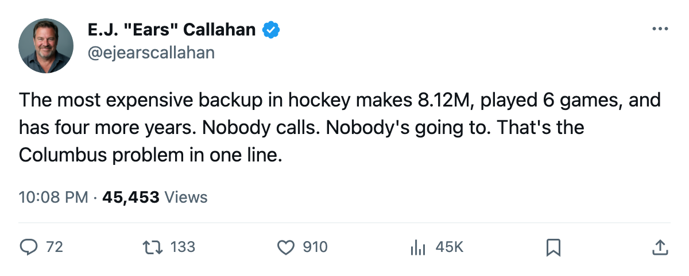
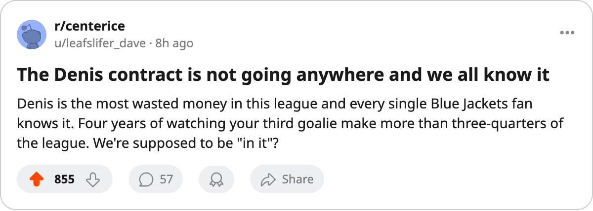

The $8.12M Man at 72 Morale: Columbus Reads 87.0 and Has No Way Out
The GM told The Tunnel the per-point is too high. The number that proves it has four years left and a catching glove.
 E.J. "Ears" CallahanInsider · The Hot Stove
E.J. "Ears" CallahanInsider · The Hot Stove

Columbus wants to move Denis. The market won't.

 Columbus Blue Jackets sit at 87.0 on the Bureau's Morale Scale. Only
Columbus Blue Jackets sit at 87.0 on the Bureau's Morale Scale. Only  Buffalo Sabres read lower in this league at 86.9. The room is on a 6-game skid, 7-7-3 through 21 games, and their general manager told The Tunnel's Marcus Bell after Thursday's game that his cost per point is "too high."
Buffalo Sabres read lower in this league at 86.9. The room is on a 6-game skid, 7-7-3 through 21 games, and their general manager told The Tunnel's Marcus Bell after Thursday's game that his cost per point is "too high."
It is. $62.03M for 25 points puts Columbus at $2.48M a point, the 7th-worst rate among 30 clubs. And the single most expensive piece on the roster belongs to a man who hasn't played enough minutes to matter.
 Marc Denis92 carries $8.12M in salary with 4 years left on his deal. He's played 6 games, averaging 65.8 minutes when he starts. His overall grade is 89, which would make him a starting goaltender in this league for any team with half a spine. His morale sits at 72, tied with three other players for the 4th-lowest mark in the entire circuit.
Marc Denis92 carries $8.12M in salary with 4 years left on his deal. He's played 6 games, averaging 65.8 minutes when he starts. His overall grade is 89, which would make him a starting goaltender in this league for any team with half a spine. His morale sits at 72, tied with three other players for the 4th-lowest mark in the entire circuit.
The arithmetic of getting rid of him is ugly. Four years at $8.12M. No contender will absorb a 72-morale backup at that rate with 4 years left on the term, not even with a draft pick in the package. Columbus would need to retain salary to find a taker, and retaining salary means they're still paying for a man in the press box. The deadline is 112 days away; the problem runs 4 more seasons.
 Peter Forsberg89 at $9.90M is the league's most expensive player, and he plays 22 games for 29 points with a grade of 95.
Peter Forsberg89 at $9.90M is the league's most expensive player, and he plays 22 games for 29 points with a grade of 95.  Paul Kariya83 costs $10.11M and answers with 30 points in 22 nights. Denis, at $8.12M, produces 6 games and a seat at the far end of the bench while the team reads 87.0.
Paul Kariya83 costs $10.11M and answers with 30 points in 22 nights. Denis, at $8.12M, produces 6 games and a seat at the far end of the bench while the team reads 87.0.
O'Connor's own words from Thursday: "The per point is too high. That tells me I'm not getting value out of the roster I've built or the rooms I'm running."
The equipment room is zero. He said so himself. He moved travel and workouts up in May, and the equipment side has been nothing since. Geoff Sanderson is putting up 23 points in 21 games on a zero-equipment room, which O'Connor called out as a number that should be higher. That's the same room Denis sits in every morning, looking at $8.12M worth of contract he can't cash out and 4 years before anyone has to.
Columbus made $22.59M last year on $46.08M in revenue. The books are fine. The roster has a man making more than almost anyone in the league, playing 6 games on a 72-morale read, and the front office just admitted the whole structure needs work. A trade deadline fix can't touch a contract that runs 4 more years, and Denis didn't cause the slide. He's just the one piece nobody can move on it.

